Annapurna Circuit
Cross the mighty Thorong La to Muktinath's sacred eternal flame.
Annapurna Circuit runs 128 km through Nepal and finishes at Muktinath. It starts at Besisahar. Your ordinary week counts toward all of it: at 5,000 steps a day that's about 5 weeks, with no flights and no leave. Below are the 12 places you pass, each with its photograph and its story.
- 128km end to end
- 12landmarks
- 5 weeksat 5,000 steps a day
- Muktinathfinishes at

The landmarks of Annapurna Circuit
12 landmarks, in walking order. Each photograph is by the person credited beneath it, used as they licensed it.
-
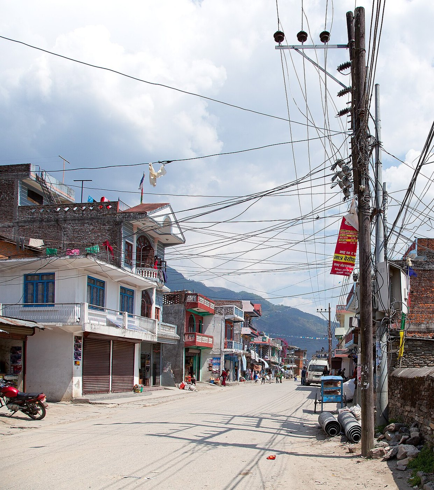
Photo: Sergey Ashmarin · Wikimedia Commons, CC BY-SA 3.0 Besisahar
Besisahar sits at 760 metres, the road-head where the Annapurna Circuit begins, strung along the Marsyangdi — the 'raging river' that roars beside the trail for days. Jeeps churn dust toward the trailhead while porters lash loads onto bamboo baskets. Ahead the valley narrows into the Annapurna massif, crowned by Annapurna I at 8,091 metres, the first eight-thousander ever climbed.
-
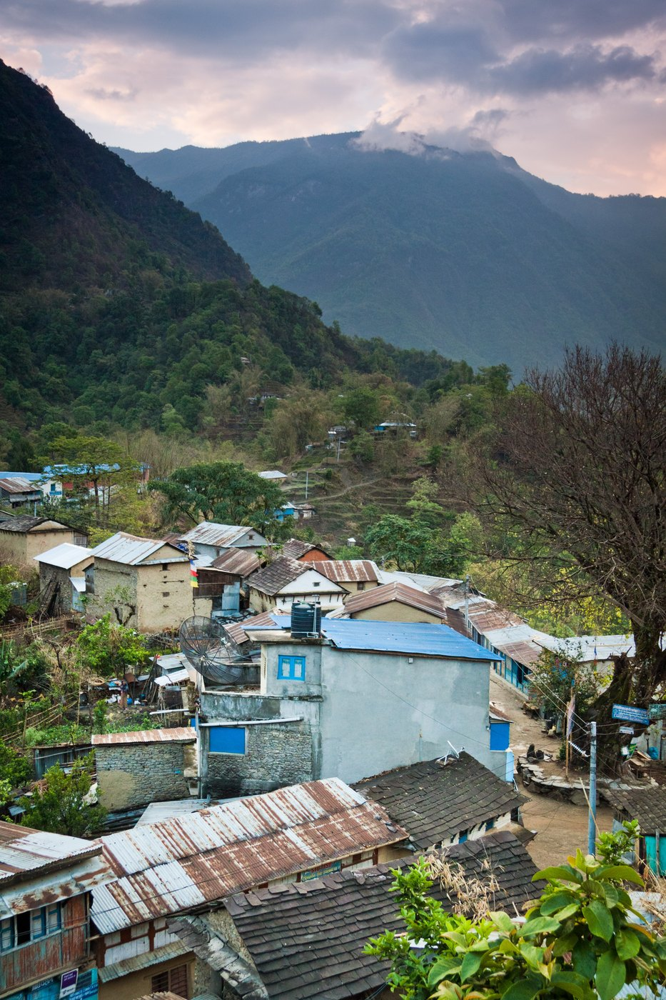
Photo: Dmitry A. Mottl · Wikipedia, CC BY-SA 3.0 Bahundanda
Terraced paddies climb the hillside in green steps to Bahundanda, the 'hill of the Brahmins', at 1,310 metres — the high saddle of the lower valley. Subtropical heat hangs over banana palms and cannabis growing wild along the path. The Marsyangdi threads its gorge far below, and waterfalls spill from the opposite wall. The teahouse porch catches whatever breeze the valley gives.
-
Jagat
Stone-paved and shuttered, Jagat clings to a shelf above the river at 1,300 metres, once a customs post on the old salt road into Tibet. The name means 'toll', taken here for centuries from caravans heading north. The gorge tightens and the Marsyangdi drops white below the village walls. A checkpost ahead logs conservation-area permits before the deeper mountains close in.
-
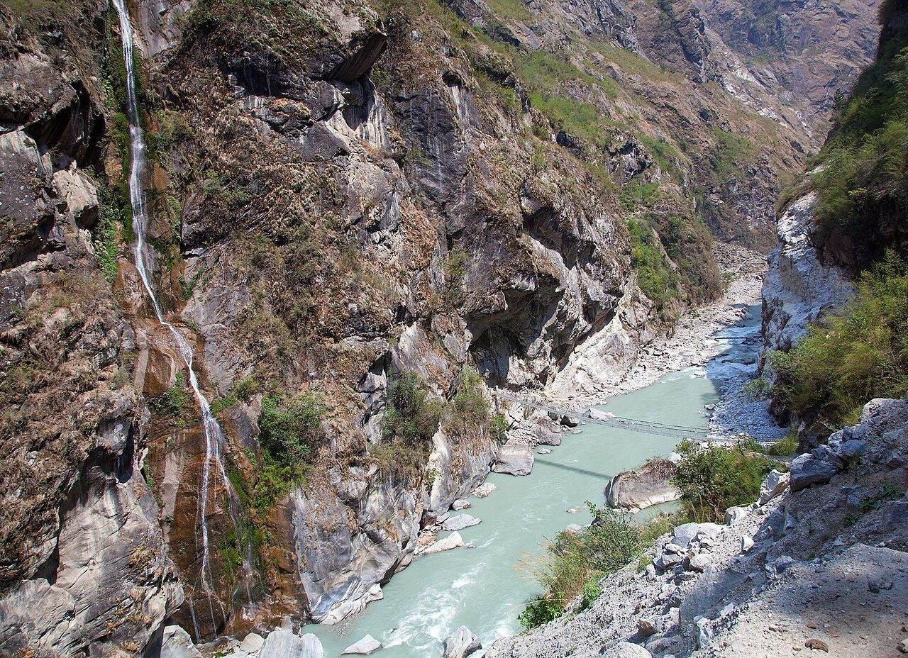
Photo: Solundir · Wikimedia Commons, CC BY-SA 3.0 Dharapani
At 1,860 metres the trail meets a long mani wall and a gate of carved prayer stones — the threshold of Manang district and Buddhist country. Dharapani, 'place of the water spout', sits where the Dudh Khola pours in from the glaciers of Manaslu. Pine and grey rock replace the terraced heat below. Chortens appear now, and the first prayer flags snap in the wind.
-
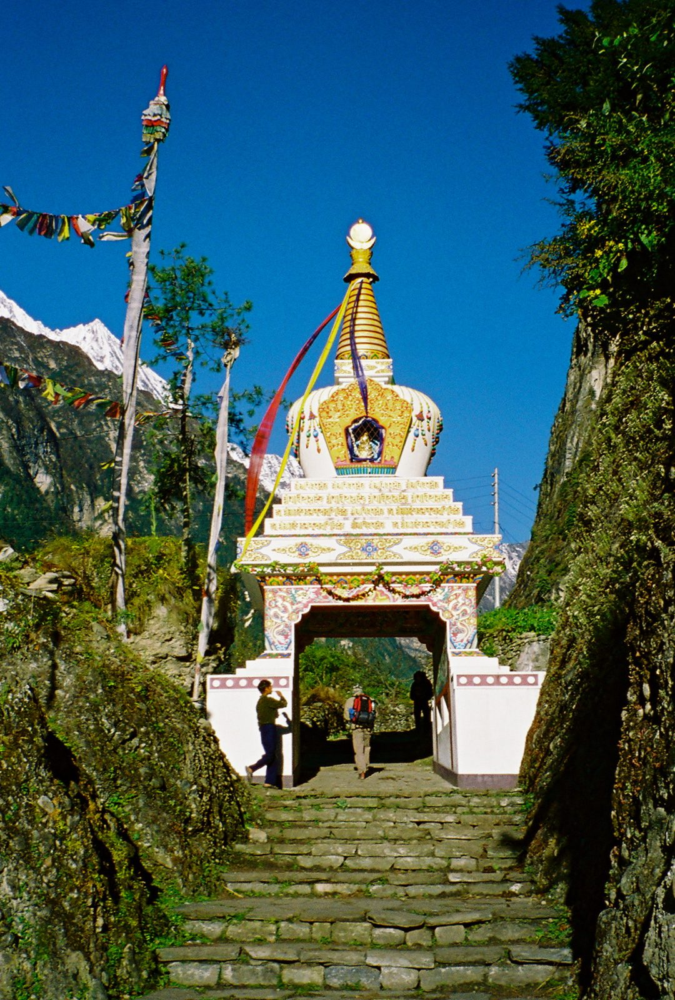
Photo: Brockzilla · Wikimedia Commons, CC BY 2.0 Chame
Chame is the seat of Manang district at 2,670 metres, where a small hot spring steams beside the cold Marsyangdi. Apple orchards and a police checkpost line the single street. At dawn the sky delivers the first true giants — Annapurna II and Lamjung Himal, snow-plastered, filling the head of the valley. The air here carries an edge the lowlands never had.
-
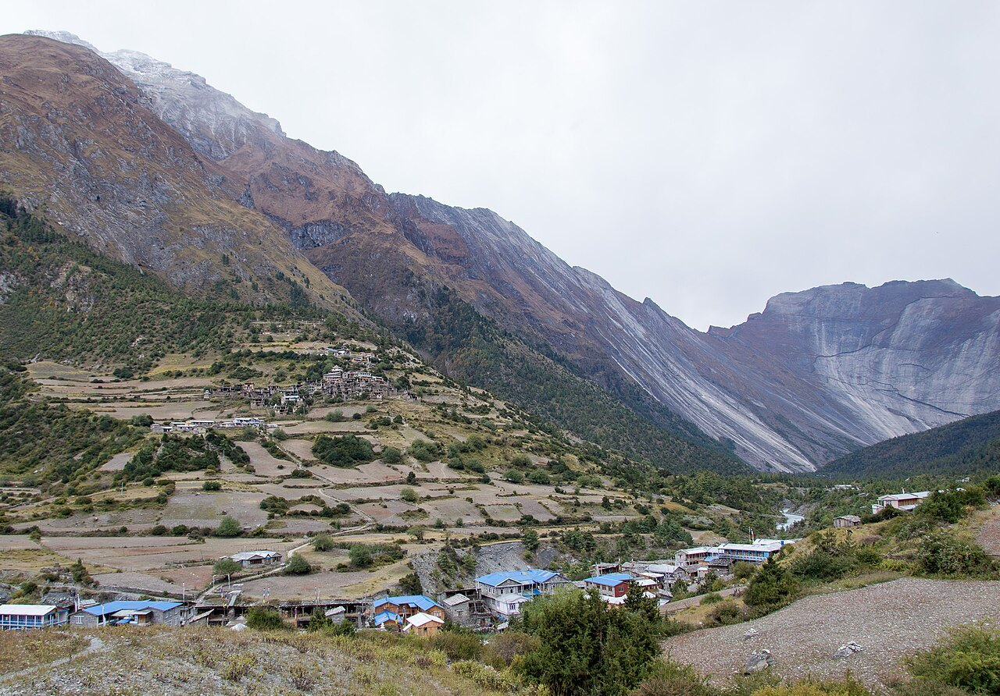
Photo: Solundir · Wikimedia Commons, CC BY-SA 3.0 Upper Pisang
Flat-roofed houses of stacked stone climb the slope, Tibetan in every line — Upper Pisang, 3,300 metres, beneath the fluted spire of Pisang Peak. A gompa crowns the village and mani wheels line the path up to it. Across the valley the Annapurnas stand in one unbroken white wall. The lower trail runs easier below, but the high route trades sweat for all of this.
-
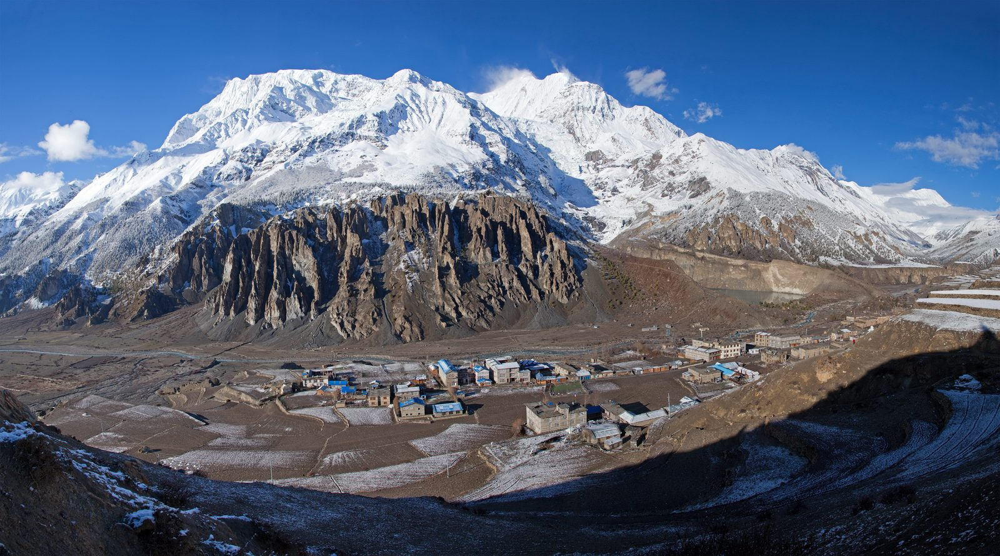
Photo: Solundir · Wikipedia, CC BY-SA 3.0 Manang
Manang spreads across a windswept plateau at 3,540 metres, facing the Gangapurna glacier whose meltwater lake glows turquoise below. The Himalayan Rescue Association gives a daily talk on altitude sickness, and most trekkers pause two nights to acclimatise. Old Braga monastery watches from the cliffs nearby. Above the village the air thins fast, and the pass is still to come.
-
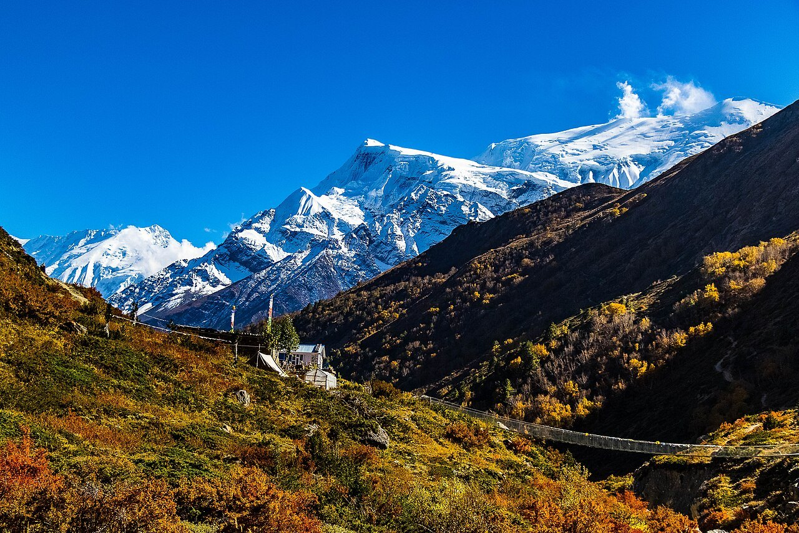
Photo: Aditya Pal · Wikimedia Commons, CC BY-SA 4.0 Yak Kharka
The tree line falls away and the world turns to rock and coarse grass. Yak Kharka — 'yak pasture' — at 4,050 metres, a scatter of stone huts where herds graze the last of the green. Blue sheep pick across the scree above the trail. Each breath comes shorter than the last. Cold arrives with the ridge's shadow, sudden and complete.
-
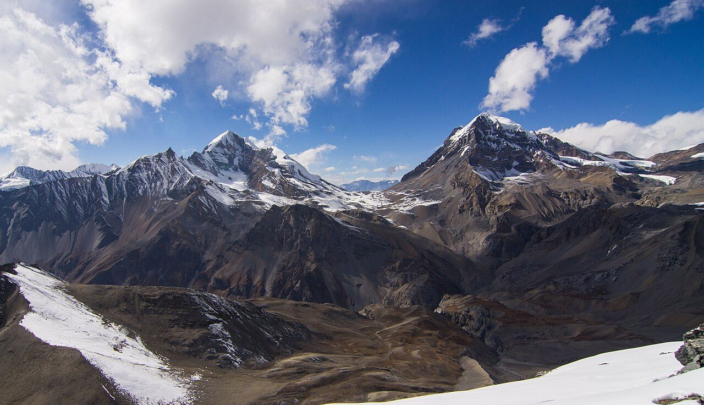
Photo: Roman Yahodka · Wikimedia Commons, CC BY-SA 4.0 Thorong Phedi
Phedi means 'foot of the hill', and that is exactly this place — 4,540 metres, a knot of lodges wedged beneath the pass. Trekkers eat early and sleep badly at this altitude, hearts hammering in the thin air. Some push on to High Camp; others hold here for a dawn start. Past the huts lies nothing but scree and the long dark climb.
-
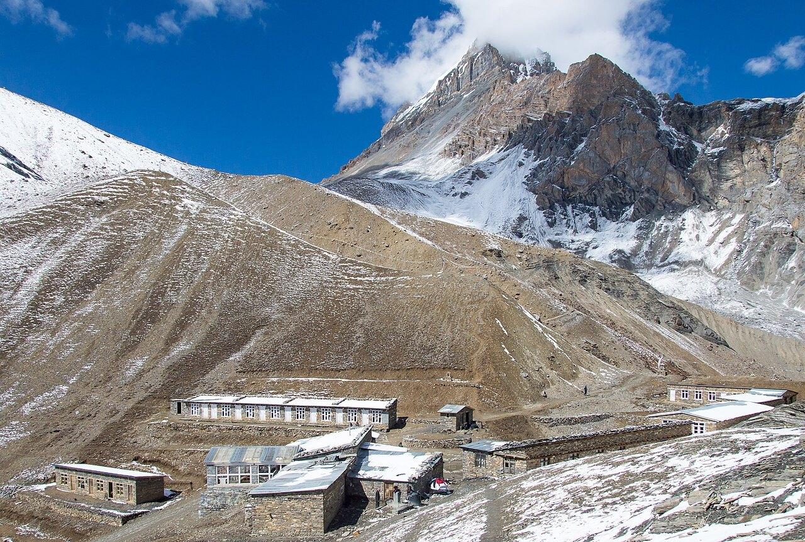
Photo: Solundir · Wikimedia Commons, CC BY-SA 3.0 Thorong High Camp
Higher still, at 4,880 metres, a lonely lodge clings to the mountainside where sleep barely comes. This is the last shelter before the pass, and the coldest — water freezes solid in the bottle overnight. Below, Thorong Phedi has already sunk into shadow. Long before light, head-torches file out onto the slope toward the top.
-
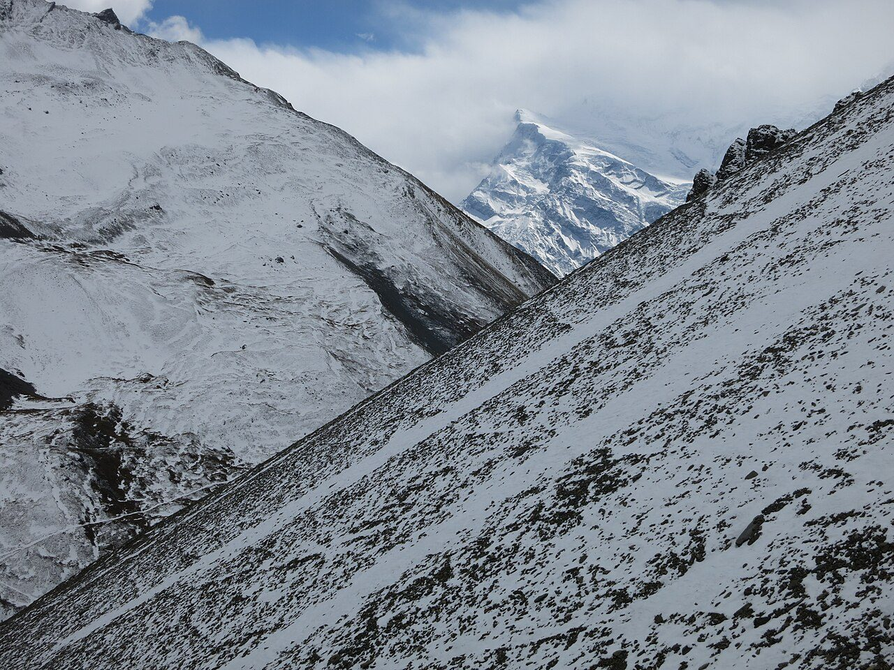
Photo: Vaupk12 · Wikimedia Commons, CC BY-SA 4.0 Thorong La
At 5,416 metres, a cairn buried under a storm of frayed prayer flags marks the top of Thorong La, one of the highest trekking passes on earth. A tin-shack tea stall sells sweet lemon to shaking hands. The wind is merciless — in October 2014 a blizzard killed more than forty trekkers and guides across this region. From the pass, everything leads down.
-
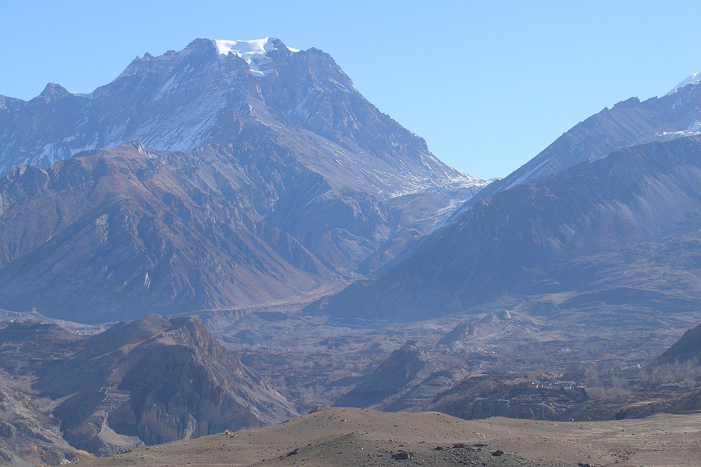
Photo: Vyacheslav Argenberg · Wikimedia Commons, CC BY 4.0 Muktinath
Muktinath, 'place of liberation', stands at 3,800 metres, sacred to Hindus and Buddhists alike. Pilgrims file beneath 108 bronze spouts shaped as cows' heads, and nearby a natural gas flame burns blue above spring water. Below, the Kali Gandaki carves one of the deepest gorges on earth, running between the eight-thousanders Annapurna and Dhaulagiri. The river's roar is gone at last — only wind, and the trickle of holy water.
Walking the Annapurna Circuit
Your watch is already counting these steps. Watch Walks spends them on the Annapurna Circuit, all 128 km of it, and hands you each landmark as you reach it. There's no route recording, no account and no ads. The Inca Trail is free; this one is a one-time purchase with no subscription.
Other trails in Asia
- Shikoku Pilgrimage 1,200 km · Japan
- Jordan Trail 675 km · Jordan
- Lycian Way 540 km · Turkey
- Manaslu Circuit 177 km · Nepal
- Nakasendo Way 530 km · Japan
- Kumano Kodo 46 km · Japan